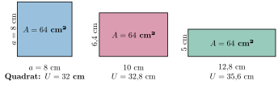

Aufgabe 6.10
In Analogie zum isoperimetrischen Problem lässt sich das isoplanare Problem formulieren:
Unter allen Rechtecken gleichen Inhalts, welches hat den kleinsten Umfang?
- Dies ist das «umgekehrte» Problem zu Aufgabe 6.9
- Nutzen Sie ähnliche Methoden wie beim isoperimetrischen Problem
- Bei festem Flächeninhalt variiert der Umfang
- Das Quadrat spielt wieder eine besondere Rolle
Unter allen inhaltsgleichen Rechtecken hat das Quadrat den kleinsten Umfang. Diese Tatsache lässt sich auf vielfältige Weise begründen. Allerdings nicht ganz so elementar wir das isoperimetrische Problem.
Algebraisch, Geometrisch, Funktional
Das Minimum lässt sich nur heuristisch/experimentell aus dem algebraischen Term oder bei Funktionalen Betrachtungen:
Die Umfangsfunktion $U(x) = 2x + \frac{2A}{x}$ hat ihr Minimum bei $x = \sqrt{A}$.

Analytische Lösung
Sei $A = 64$ cm² der feste Flächeninhalt.
Für ein Rechteck mit Seiten $x$ und $y = \frac{64}{x}$: $$U(x) = 2\left(x + \frac{64}{x}\right)$$
Minimierung durch Ableitung: $$U'(x) = 2\left(1 - \frac{64}{x^2}\right) = 0$$ $$x^2 = 64 \Rightarrow x = 8$$
Also $y = 8$ → Quadrat mit $U = 32$ cm.
Lösung über Mittelungleichung
Für Seiten $a, b$ mit $ab = A$: $$\frac{a+b}{2} \geq \sqrt{ab} = \sqrt{A}$$
Der Umfang $U = 2(a+b) \geq 4\sqrt{A}$ ist minimal bei $a = b = \sqrt{A}$.
Dualität:
Das isoperimetrische und das isoplanare Problem sind dual zueinander. In beiden Fällen ist das Quadrat die optimale Lösung.